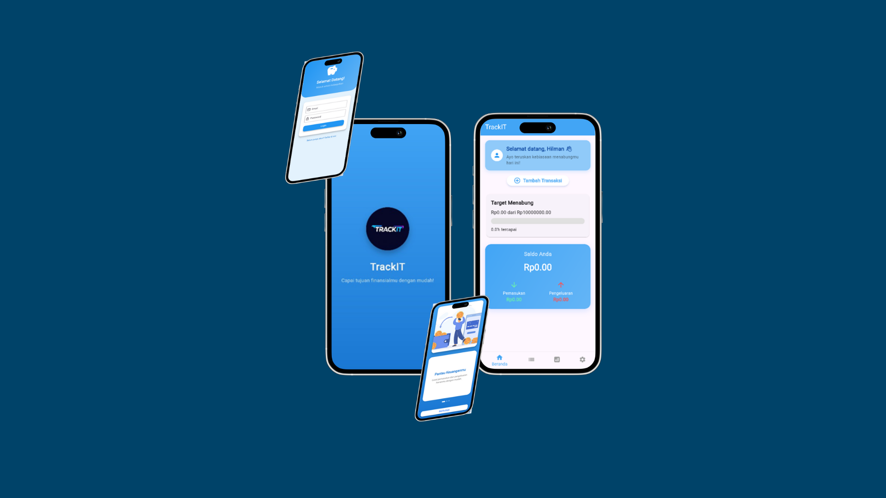
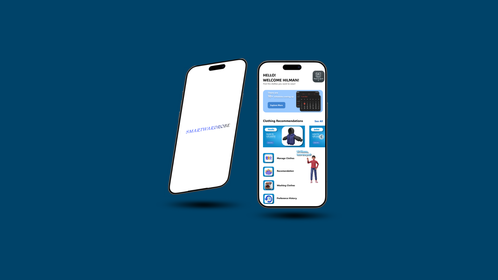
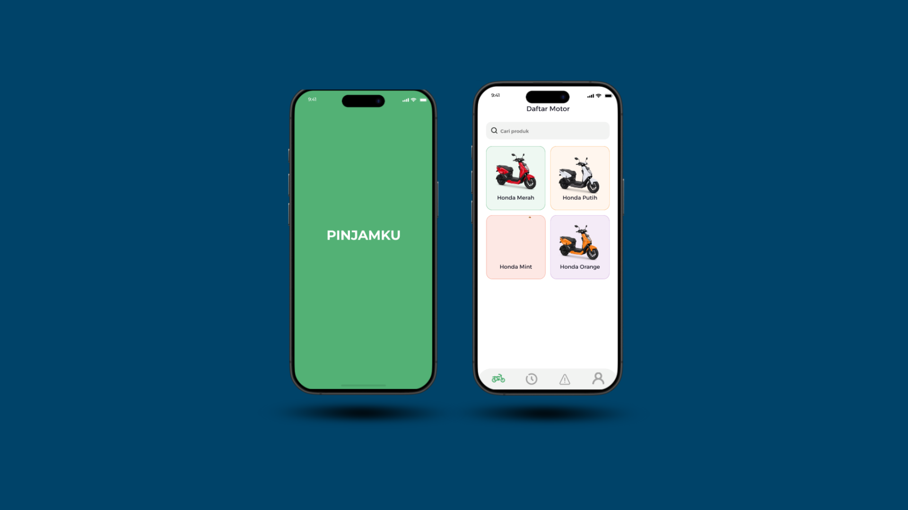

As a dedicated developer, I focus on UI/UX design and mobile application development. I have hands-on experience in transforming ideas into functional digital products, using Figma for design and Flutter for implementation. This technical expertise is complemented by my skills in project management and leadership, ensuring every project I build is not only innovative but also executed effectively.
As a proactive Computer Science student from Mercu Buana University, I possess a strong academic foundation. With a GPA of 3.59, I have mastered core concepts such as data structures and software engineering, which enables me to build products that are not only visually appealing but also have a logical and efficient architecture.
My passion lies in the intersection of UI/UX design and mobile application development. I am proficient in the entire design workflow using Figma, from user research to creating interactive prototypes. This expertise is strengthened by my mastery of Flutter (Dart), which allows me to independently translate design visions into fully functional, cross-platform applications. Projects such as SmartWardrobe and Pinjamku are a testament to my ability to create user-centric solutions, while TrackIT and Mekdi App demonstrate my initiative to continuously learn and build products from scratch.
Beyond my technical skills, I have a strong track record in leadership and project management. As the Head of the BEM Fasilkom Executive Committee, I was fully responsible for orchestrating large-scale projects, including a visit to the BSSN (National Cyber and Crypto Agency). This experience honed my abilities in resource management, team coordination, and strategic communication, which are crucial for ensuring every initiative runs smoothly. This unique combination of technical expertise and soft skills makes me a reliable individual capable of leading and executing complex technology projects.
As a staff member of the Community Engagement division at BEM Fasilkom, I was deeply involved in building meaningful relationships between the student body and the local community. My role extended across the entire project lifecycle, from initial needs assessment and strategic planning to on-site execution. This experience was instrumental in developing my abilities in project coordination, stakeholder communication, and logistical management, which proved crucial to the success of every initiative. I was responsible for liaising with community leaders and ensuring the smooth delivery of each program, which not only served our academic mission but also strengthened the university's ties with local residents.
Key Contributions:
As a Project Leader, I was entrusted with the overall responsibility of orchestrating the entire project lifecycle, from initial conceptualization to execution and evaluation. This role demanded a deep understanding of project management, where I was not only responsible for strategic planning but also for overseeing the implementation of every detail to ensure we met our objectives. I actively led a team, guided each member, and fostered synergy across divisions to achieve our collective goals. This experience was crucial in honing my abilities in resource management and strategic communication, enabling me to manage budgets, coordinate with external stakeholders, and resolve issues under pressure.
As a staff member of the Consumption Division for the Project to BSSN, I was entrusted with the crucial responsibility of managing all food and beverage logistics for the event. This role demanded meticulous attention to detail and a proactive approach to ensure the comfort and satisfaction of all 100+ participants and staff. I was directly involved in every stage, from vendor selection and negotiation to inventory management and on-site distribution. This experience was instrumental in honing my ability to plan effectively under pressure and coordinate with various parties to ensure seamless delivery, all while adhering to a strict budget. My contributions helped guarantee the smooth execution of the event and a positive experience for all attendees.
Key Contributions:

TrackIT is a simple, powerful mobile app built with Flutter (Dart) to help you manage your money. Easily track your income and expenses, set budgets, and gain valuable insights into your spending habits. With a clean, intuitive interface, TrackIT makes managing your finances effortless.

This UI/UX design project outlines a sophisticated and intelligent wardrobe management application named SmartWardrobe. The core of this design is to revolutionize the way users interact with their clothing, moving beyond simple organization to a personalized, AI-driven styling assistant. The user interface is meticulously crafted to be intuitive and visually clean, ensuring a seamless and engaging user experience from the moment they open the app.

In this project, I took full ownership of the UI/UX design for a vehicle rental application. My main goal was to simplify the entire rental process, from vehicle search to payment. I focused on creating a clean and efficient interface to allow users to complete transactions quickly. This project honed my skills in interaction design and system design, enabling me to accommodate various user scenarios.
Let's build something great together. I enjoy networking and exchanging ideas about innovative projects. Feel free to get in touch for a casual chat or to discuss a potential partnership. Choose the one that best fits your professional style and the impression you want to make on potential clients or employers. Remember to make your contact information easily accessible nearby.
{kind=link}